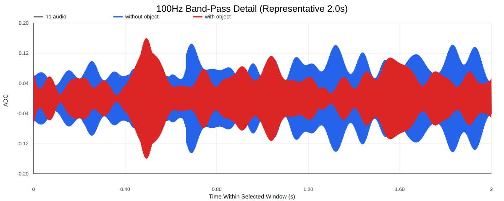
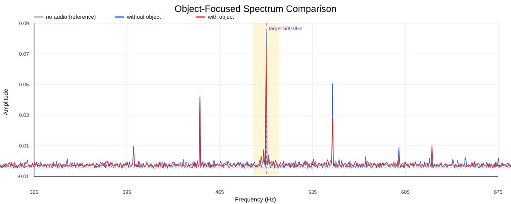
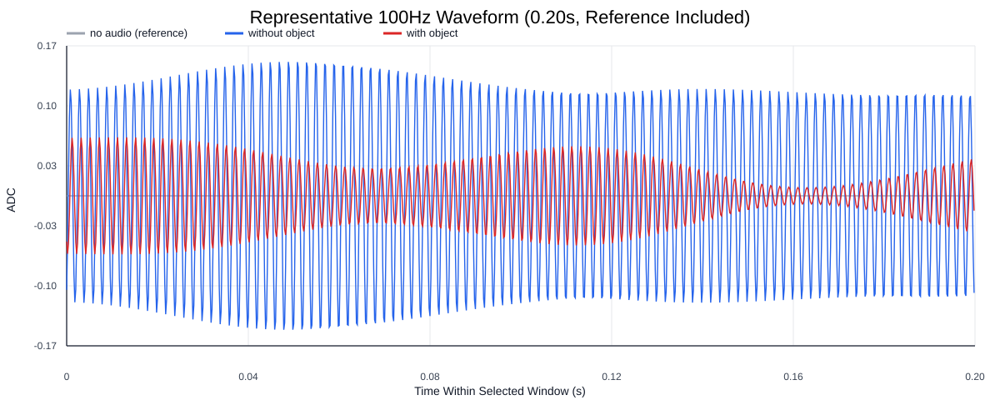
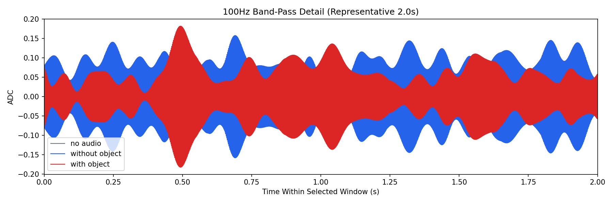
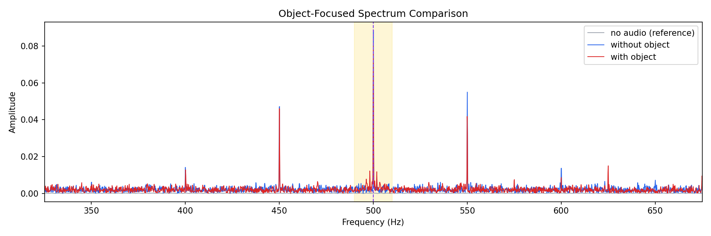
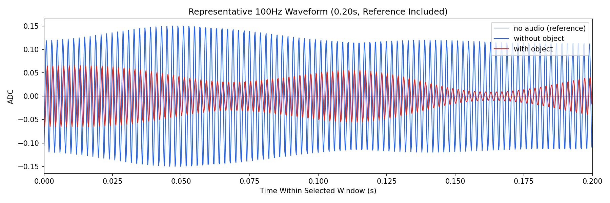

Background: F:\项目类文件夹\异物检测4.10\Data_Dual\frequency_sweep\0500Hz\repeat_02\raw\no_audio.csv
Without object: F:\项目类文件夹\异物检测4.10\Data_Dual\frequency_sweep\0500Hz\repeat_02\raw\without_object.csv
With object: F:\项目类文件夹\异物检测4.10\Data_Dual\frequency_sweep\0500Hz\repeat_02\raw\with_object.csv
| Metric | 无音频 | 100Hz无异物 | 100Hz有异物 | 无异物/无音频 | 有异物/无异物 | 有异物/无音频 |
|---|---|---|---|---|---|---|
| centered_rms | 0.009205 | 0.221192 | 0.228361 | 24.0306 | 1.0324 | 24.8095 |
| raw_target_amp | 0.000206 | 0.088609 | 0.079934 | 429.4617 | 0.9021 | 387.4201 |
| filtered_rms | 0.000900 | 0.069288 | 0.068182 | 76.9807 | 0.9840 | 75.7517 |
| filtered_target_amp | 0.000206 | 0.088609 | 0.079934 | 429.4617 | 0.9021 | 387.4201 |
| filtered_energy_ratio | 0.009562 | 0.098124 | 0.089144 | 10.2620 | 0.9085 | 9.3229 |
| window_filtered_target_amp_mean | 0.000241 | 0.093311 | 0.089543 | 387.7745 | 0.9596 | 372.1156 |
| window_filtered_target_amp_std | 0.001106 | 0.027120 | 0.033670 | 24.5262 | 1.2415 | 30.4496 |





